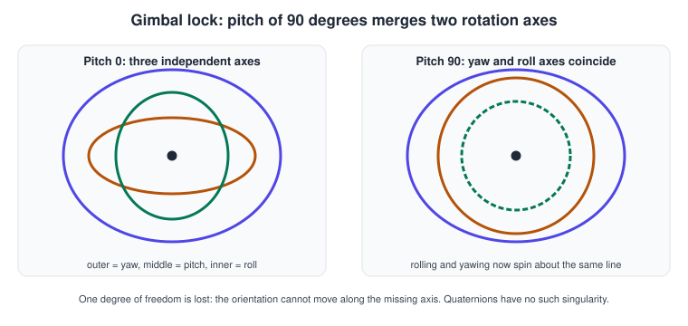
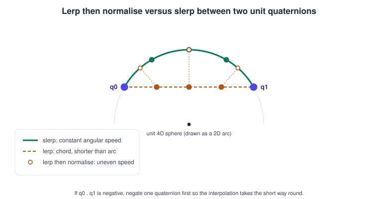
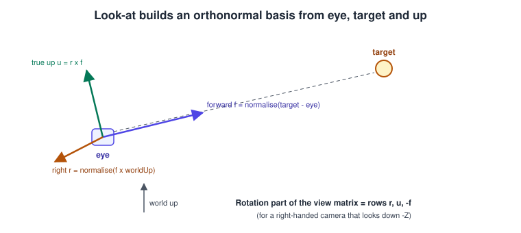

Rotations & Quaternions
|
This content was generated with the assistance of AI and should be verified against the official documentation before being relied on in production. |
Every object in a 3D scene has an orientation, and every animation that turns something has to interpolate between two orientations. This page explains the four ways of storing a rotation (Euler angles, axis-angle, matrices and unit quaternions), why engines store quaternions and expose Euler angles only to people, how to blend two orientations without speed changes, and how to build a rotation that points at a target. The Bookshelf running example uses all of them: a book is rotated by a quaternion when it falls off the shelf, the camera orbits the shelf with a look-at rotation, and the spinning book interpolates between two stored poses.
Facts were checked in November 2026. The conventions documented are those of glTF 2.0 (quaternions stored as x, y, z, w), GLM 1.0, three.js
(current releases), Apple’s simd library (simd_quatf, Swift 6 and Xcode 26) and Unity 6 (Quaternion). The mathematics is API-independent:
only the component order, the handedness and the multiplication order differ between libraries, and those differences are tabulated below.
Prerequisites are the vectors and matrices and
coordinate spaces pages. For production-grade Java implementations of rotations,
quaternions and camera models see the irurueta-geometry and irurueta-algebra components of this site.
Why rotations are special
A translation or a scale composes by simple addition or multiplication of three numbers. A rotation does not: rotating about X then Y gives a different result from Y then X, and a 3D rotation has three degrees of freedom but cannot be represented by three numbers without a singularity somewhere. Every representation therefore trades off between four properties.
| Representation | Numbers | Compose | Interpolate | Singularity | Typical use |
|---|---|---|---|---|---|
Euler angles (yaw, pitch, roll) |
3 |
no (convert first) |
poor |
gimbal lock |
editor fields, input, UI |
Axis-angle |
4 (axis plus angle) |
no |
only about a fixed axis |
none (angle 0 has no axis) |
authoring, physics angular velocity |
Rotation matrix 3 x 3 |
9 |
yes (matrix product) |
no |
none, but drifts from orthonormal |
vertex shaders, uniform buffers |
Unit quaternion |
4 |
yes (Hamilton product) |
yes (slerp, nlerp) |
none (double cover: q and -q are the same rotation) |
storage, animation, scene graphs, skeletons |
Euler angles and gimbal lock
Euler angles describe an orientation as three successive turns about coordinate axes, for example yaw about Y, then pitch about X, then roll about Z. They are intuitive and they are what an editor inspector shows, but they have three problems.
-
The order matters and every library chooses its own. three.js
Eulerdefaults to XYZ, Unity applies Z, then X, then Y, and aircraft conventions use yaw, pitch, roll. The same three numbers give different orientations in different engines. -
Angles are not unique: 0, 360 and -360 degrees are the same turn, and (180, 90, 180) can equal (0, 90, 0) in some orders.
-
Gimbal lock: when the middle rotation is 90 degrees, the first and third axes line up and one degree of freedom disappears.

At pitch 90 the yaw and roll rotations act about the same line, so changing either produces the same motion. An animation that interpolates the three angles independently also takes strange paths (it can spin through large angles to reach a nearby orientation) because the angle space is not the rotation space. A first-person camera avoids the problem by clamping pitch to about plus or minus 89 degrees and keeping yaw and pitch as two separate numbers that are combined into a quaternion or a matrix each frame; it never accumulates rotations by repeatedly adding small Euler steps.
Axis-angle
Any rotation in 3D is a turn by an angle \(\theta\) about a unit axis \(\mathbf{u}\). Rodrigues' formula rotates a vector \(\mathbf{v}\) directly:
\[\mathbf{v}' = \mathbf{v}\cos\theta + (\mathbf{u} \times \mathbf{v})\sin\theta + \mathbf{u}(\mathbf{u} \cdot \mathbf{v})(1 - \cos\theta)\]
Axis-angle is the natural way to say "spin the book about the vertical axis at 90 degrees per second" and is what glm::angleAxis, Unity Quaternion.AngleAxis,
three.js setFromAxisAngle and simd_quatf(angle:axis:) take. It does not compose and does not interpolate between two different axes, so it is
converted to a quaternion immediately.
Rotation matrices
A rotation matrix \(R\) is a 3 x 3 orthonormal matrix with determinant +1. Rotation about the Z axis by \(\theta\) (right-handed, column vectors) is:
\[R_z(\theta) = \begin{bmatrix} \cos\theta & -\sin\theta & 0 \\ \sin\theta & \cos\theta & 0 \\ 0 & 0 & 1 \end{bmatrix}\]
Matrices compose by multiplication and are what the vertex shader finally uses (embedded in a 4 x 4 model matrix), but nine numbers hold three degrees of freedom, so repeated multiplication accumulates rounding error and the matrix stops being orthonormal (shear and scale creep in). Renormalising a matrix (Gram-Schmidt) is more work and less well behaved than renormalising a quaternion. The meaning of the layout (column-major storage, column versus row vectors) is covered on the vectors and matrices page; it decides whether a product reads right to left or left to right.
Unit quaternions
A quaternion \(q = w + x\mathbf{i} + y\mathbf{j} + z\mathbf{k}\) has one real part and three imaginary parts. A unit quaternion (norm 1) lives on the surface of a 4D sphere and represents a rotation by angle \(\theta\) about unit axis \(\mathbf{u}\) as:
\[q = \left(\cos\frac{\theta}{2},\ \mathbf{u}\sin\frac{\theta}{2}\right) = (w, x, y, z)\]
Properties to remember:
-
Composition is the Hamilton product. If \(q_1\) is applied after \(q_2\), the combined rotation is \(q_1 q_2\) (the same right-to-left reading as column-vector matrices). The product is not commutative.
-
Inverse of a unit quaternion is its conjugate \((w, -x, -y, -z)\), so undoing a rotation costs three sign flips.
-
Rotating a vector \(\mathbf{v}\): \(\mathbf{v}' = q\,\mathbf{v}\,q^{-1}\), where \(\mathbf{v}\) is treated as the pure quaternion \((0, \mathbf{v})\). The efficient form needs two cross products: with \(\mathbf{r} = (x, y, z)\), \(\mathbf{t} = 2(\mathbf{r} \times \mathbf{v})\) and \(\mathbf{v}' = \mathbf{v} + w\mathbf{t} + \mathbf{r} \times \mathbf{t}\).
-
Double cover: \(q\) and \(-q\) are the same rotation. This matters for interpolation (below) and for equality tests: compare \(|q_1 \cdot q_2|\) with 1, not \(q_1 = q_2\).
-
Identity is \((1, 0, 0, 0)\) in w-first notation, and \((0, 0, 0, 1)\) in the x, y, z, w memory order used by glTF, three.js, Unity and Metal.
-
Normalise after many operations: floating-point error makes the norm drift away from 1 and a non-unit quaternion produces a scaled, sheared rotation.
The conversion to a 3 x 3 matrix, which a shader or a uniform buffer needs, is:
\[R = \begin{bmatrix} 1 - 2(y^2 + z^2) & 2(xy - zw) & 2(xz + yw) \\ 2(xy + zw) & 1 - 2(x^2 + z^2) & 2(yz - xw) \\ 2(xz - yw) & 2(yz + xw) & 1 - 2(x^2 + y^2) \end{bmatrix}\]
Component order and conventions per library
| Library | Memory / constructor order | Handedness and Euler order | Notes |
|---|---|---|---|
glTF 2.0 |
x, y, z, w (unit, |
right-handed, +Y up |
Rotation animation channels interpolate with spherical linear interpolation ( |
GLM |
constructor |
right-handed by default; left-handed with a macro |
|
three.js |
|
right-handed; Euler default XYZ |
|
Apple simd |
|
right-handed |
|
Unity |
|
left-handed, Y up; Euler applied Z, X, Y |
|
Unreal Engine |
|
left-handed, Z up; |
|
Interpolating orientations: lerp, nlerp and slerp
To animate between two orientations \(q_0\) and \(q_1\) you want the object to turn at a constant angular speed along the shortest path.

-
Lerp \((1-t)q_0 + t q_1\) takes a chord through the sphere, so the result is not unit length.
-
Nlerp (lerp, then normalise) fixes the length and is cheap, but the angular speed is not constant: it is fastest in the middle. For small angles (a camera follow, skeletal blending of nearby poses) the difference is invisible and nlerp is often preferred.
-
Slerp keeps the angular speed constant:
\[\operatorname{slerp}(q_0, q_1, t) = \frac{\sin((1-t)\Omega)}{\sin\Omega}\,q_0 + \frac{\sin(t\Omega)}{\sin\Omega}\,q_1, \qquad \cos\Omega = q_0 \cdot q_1\]
Two implementation details cause most bugs. First, because of the double cover, if \(q_0 \cdot q_1 < 0\) the interpolation takes the long way round; negate one quaternion first. Second, when \(\Omega\) is tiny \(\sin\Omega\) approaches zero and the formula divides by almost zero; fall back to nlerp when the dot product is above about 0.9995.
Slerp between a series of keyframes is not C1 continuous at the keys (the speed jumps). Smooth paths use squad or spline interpolation of quaternions, or the cubic spline
interpolation that glTF offers (CUBICSPLINE) with tangents stored per key, which is why Java 3D’s TCB spline interpolators and the glTF cubic-spline channel exist for the same reason.
Complete example: quaternion type in C++
#include <cmath>
#include <cstdio>
struct Vec3 { float x, y, z; };
struct Quat {
float x, y, z, w; // same memory order as glTF, three.js, Unity and Metal
static Quat identity() { return {0.f, 0.f, 0.f, 1.f}; }
static Quat fromAxisAngle(Vec3 axis, float radians) {
float len = std::sqrt(axis.x * axis.x + axis.y * axis.y + axis.z * axis.z);
float s = std::sin(radians * 0.5f) / len; // normalise the axis
return {axis.x * s, axis.y * s, axis.z * s, std::cos(radians * 0.5f)};
}
// Hamilton product: apply b first, then a (a * b).
friend Quat operator*(const Quat& a, const Quat& b) {
return {a.w * b.x + a.x * b.w + a.y * b.z - a.z * b.y,
a.w * b.y - a.x * b.z + a.y * b.w + a.z * b.x,
a.w * b.z + a.x * b.y - a.y * b.x + a.z * b.w,
a.w * b.w - a.x * b.x - a.y * b.y - a.z * b.z};
}
Quat conjugate() const { return {-x, -y, -z, w}; }
Quat normalised() const {
float n = std::sqrt(x * x + y * y + z * z + w * w);
return {x / n, y / n, z / n, w / n};
}
Vec3 rotate(Vec3 v) const { // v + w t + r x t
Vec3 r{x, y, z};
Vec3 t{2.f * (r.y * v.z - r.z * v.y),
2.f * (r.z * v.x - r.x * v.z),
2.f * (r.x * v.y - r.y * v.x)};
return {v.x + w * t.x + (r.y * t.z - r.z * t.y),
v.y + w * t.y + (r.z * t.x - r.x * t.z),
v.z + w * t.z + (r.x * t.y - r.y * t.x)};
}
};
Quat slerp(Quat a, Quat b, float t) {
float d = a.x * b.x + a.y * b.y + a.z * b.z + a.w * b.w;
if (d < 0.f) { b = {-b.x, -b.y, -b.z, -b.w}; d = -d; } // shortest path
if (d > 0.9995f) { // nearly parallel: nlerp
return Quat{a.x + t * (b.x - a.x), a.y + t * (b.y - a.y),
a.z + t * (b.z - a.z), a.w + t * (b.w - a.w)}.normalised();
}
float omega = std::acos(d), s = std::sin(omega);
float ka = std::sin((1.f - t) * omega) / s, kb = std::sin(t * omega) / s;
return {ka * a.x + kb * b.x, ka * a.y + kb * b.y, ka * a.z + kb * b.z, ka * a.w + kb * b.w};
}
int main() {
const float pi = 3.14159265f;
Quat up = Quat::fromAxisAngle({0, 1, 0}, pi / 2.f); // 90 degrees about +Y
Vec3 v = up.rotate({1, 0, 0}); // the book's spine direction
std::printf("rotated: %.3f %.3f %.3f\n", v.x, v.y, v.z); // about 0, 0, -1 (right-handed)
Quat half = slerp(Quat::identity(), up, 0.5f); // 45 degrees
Vec3 h = half.rotate({1, 0, 0});
std::printf("halfway: %.3f %.3f %.3f\n", h.x, h.y, h.z);
}Complete example: GLM and the GPU
On the CPU, GLM already provides the operations above. The quaternion is converted to a matrix once per object per frame and uploaded with the other transform data.
#define GLM_ENABLE_EXPERIMENTAL
#include <glm/glm.hpp>
#include <glm/gtc/quaternion.hpp>
#include <glm/gtc/matrix_transform.hpp>
glm::mat4 bookModelMatrix(float seconds, const glm::vec3& shelfPosition) {
// spin 90 degrees per second about +Y, tilted 15 degrees about +X
glm::quat spin = glm::angleAxis(glm::radians(90.0f) * seconds, glm::vec3(0, 1, 0));
glm::quat tilt = glm::angleAxis(glm::radians(15.0f), glm::vec3(1, 0, 0));
glm::quat q = glm::normalize(spin * tilt); // tilt first, then spin
return glm::translate(glm::mat4(1.0f), shelfPosition) * glm::mat4_cast(q);
}
glm::mat4 cameraView(const glm::vec3& eye, const glm::vec3& target) {
return glm::lookAt(eye, target, glm::vec3(0, 1, 0)); // right-handed look-at
}Complete example: rotating in a shader (GLSL and WGSL)
Skinning and procedural animation often rotate a vertex by a quaternion directly in the vertex shader, avoiding a matrix upload.
#version 330 core
layout(location = 0) in vec3 aPosition;
uniform vec4 uRotation; // x, y, z, w (unit quaternion)
uniform mat4 uViewProjection;
vec3 rotate(vec4 q, vec3 v) {
vec3 t = 2.0 * cross(q.xyz, v);
return v + q.w * t + cross(q.xyz, t);
}
void main() {
gl_Position = uViewProjection * vec4(rotate(uRotation, aPosition), 1.0);
}struct Frame {
viewProjection : mat4x4<f32>,
rotation : vec4<f32>, // x, y, z, w (unit quaternion)
};
@group(0) @binding(0) var<uniform> frame : Frame;
fn rotate(q : vec4<f32>, v : vec3<f32>) -> vec3<f32> {
let t = 2.0 * cross(q.xyz, v);
return v + q.w * t + cross(q.xyz, t);
}
@vertex
fn vs(@location(0) position : vec3<f32>) -> @builtin(position) vec4<f32> {
return frame.viewProjection * vec4<f32>(rotate(frame.rotation, position), 1.0);
}Source: WGSL: cross built-in function
Complete example: three.js, Swift and Unity
import * as THREE from 'three';
const a = new THREE.Quaternion().setFromAxisAngle(new THREE.Vector3(0, 1, 0), 0);
const b = new THREE.Quaternion().setFromAxisAngle(new THREE.Vector3(0, 1, 0), Math.PI / 2);
const book = new THREE.Object3D();
function animate(t) { // t in 0..1
book.quaternion.slerpQuaternions(a, b, t); // shortest path, constant speed
}
// look-at: orient the camera towards the shelf (three.js cameras look down -Z)
const camera = new THREE.PerspectiveCamera(60, 16 / 9, 0.1, 100);
camera.position.set(2, 1.5, 3);
camera.lookAt(new THREE.Vector3(0, 1, 0));Source: three.js docs: Quaternion
import simd
let a = simd_quatf(angle: 0, axis: simd_float3(0, 1, 0))
let b = simd_quatf(angle: .pi / 2, axis: simd_float3(0, 1, 0))
// halfway orientation, constant angular speed
let halfway = simd_slerp(a, b, 0.5)
// rotate the book's spine direction
let spine = halfway.act(simd_float3(1, 0, 0))
print(spine)Source: Apple: simd_quatf
using UnityEngine;
public class BookSpinner : MonoBehaviour
{
public Transform target; // the shelf
Quaternion start, end;
float t;
void Start()
{
start = transform.rotation;
end = start * Quaternion.AngleAxis(90f, Vector3.up); // local turn about Y
}
void Update()
{
t = Mathf.Min(1f, t + Time.deltaTime);
transform.rotation = Quaternion.Slerp(start, end, t);
// look-at: aim the camera at the shelf with +Y as up
Camera.main.transform.rotation =
Quaternion.LookRotation(target.position - Camera.main.transform.position, Vector3.up);
}
}Source: Unity Scripting API: Quaternion
glTF animation channel
In a glTF file a rotation animation is a sampler whose output accessor holds one quaternion (VEC4, normalised, x y z w) per keyframe. Players interpolate it with slerp.
{
"animations": [{
"samplers": [{ "input": 4, "output": 5, "interpolation": "LINEAR" }],
"channels": [{ "sampler": 0, "target": { "node": 3, "path": "rotation" } }]
}]
}Source: glTF 2.0: animations
Look-at and building a rotation from a direction
A look-at rotation answers "which orientation makes the forward axis point from the eye to the target, with the up axis as close as possible to a given up vector?". It is used for cameras, billboards, turrets and characters that watch something.

-
Forward: \(\mathbf{f} = \operatorname{normalise}(\text{target} - \text{eye})\).
-
Right: \(\mathbf{r} = \operatorname{normalise}(\mathbf{f} \times \text{worldUp})\).
-
True up: \(\mathbf{u} = \mathbf{r} \times \mathbf{f}\).
For a camera the view matrix is the inverse of the camera’s world transform, so its rotation part has \(\mathbf{r}\), \(\mathbf{u}\) and \(-\mathbf{f}\) as rows (right-handed camera looking down -Z), plus a translation of \(-R\,\text{eye}\). For an object (not a camera) the same three vectors are the columns of its rotation matrix, and the matrix can be converted to a quaternion for storage. The construction fails when the forward vector is parallel to the up hint (looking straight up or down): the cross product is zero. Engines pick an alternative hint, and your code should too.
The shortest rotation taking one direction \(\mathbf{a}\) to another \(\mathbf{b}\) (for example aligning a shelf’s normal with a detected AR plane) has axis \(\mathbf{a} \times \mathbf{b}\)
and angle \(\arccos(\mathbf{a} \cdot \mathbf{b})\); simd_quatf(from:to:), three.js setFromUnitVectors and Unity Quaternion.FromToRotation implement it.
Common mistakes
-
Un-normalised quaternions. Normalise after accumulating, after deserialising and after hand-editing components. Slerp and rotation formulas assume unit length.
-
Multiplying in the wrong order. In a right-to-left library
parent * childapplies the child first. If the object orbits instead of spinning, swap the operands. -
Mixing component orders. Passing a w-first GLM quaternion to a library that expects x, y, z, w silently produces a different rotation. Print the identity to check.
-
Mixing handedness. Unity and Unreal are left-handed; glTF, GLM and three.js are right-handed. A glTF import into a left-handed engine flips one axis, and importers apply the conversion for you, but custom code does not.
-
Interpolating Euler angles for animation. Convert to quaternions and slerp, or let the engine’s animation system do it.
-
Ignoring the shortest path (negative dot product) and skipping the nlerp fallback for almost equal quaternions.
-
Using degrees where radians are expected (GLM, three.js, simd and Metal use radians; Unity’s
AngleAxisandEuleruse degrees).
Performance notes
-
A quaternion is 16 bytes against 36 for a 3 x 3 matrix (48 once padded for GPU alignment), so skeletons and instance buffers store quaternions, a translation and a scale (a TRS decomposition), and build the matrix in the vertex shader.
-
Rotating a vertex by a quaternion costs two cross products, about as many operations as a matrix-vector product, so the saving is memory bandwidth, not arithmetic.
-
Compose many rotations as quaternions and convert once; do not rebuild matrices from Euler angles every frame for thousands of objects.
-
Prefer nlerp on the GPU for blending skinning poses; reserve slerp for animation where constant speed is visible.
Recent changes
-
glTF 2.0 stores node rotation as a unit quaternion and animates it with slerp; the format is also published as ISO/IEC 12113:2022.
-
GLM 1.0 is the first release with a stable version number after years of 0.9.9.x and keeps the quaternion API described above.
-
Apple’s
simdlibrary bridges to Metal Shading Language, wherefloat4in the x, y, z, w order is the convention for quaternions in compute shaders. -
Unity 6 and Unreal Engine 5 continue to expose quaternions as the stored rotation and Euler angles as an editing view.
What the books say, and what changed
Selman’s Java 3D Programming (ch. 12) and the Java 3D API Specification 1.3 (appendix A and the chapter on behaviours) teach rotation through Transform3D, AxisAngle4d, Quat4f and the
rotation interpolators (RotationInterpolator, RotPosPathInterpolator and the TCB spline path interpolators), driven by an Alpha time function. The mathematics (axis-angle, quaternions, slerp) is unchanged
and still correct. The OpenGL SuperBible (ch. 4) introduces transformations through glRotate, glPushMatrix and glPopMatrix.
| In the books | Today |
|---|---|
|
Removed in the OpenGL core profile (3.1 and later); build matrices on the CPU with GLM, glam, simd or an engine, and upload them as uniforms. |
|
Engine animation systems and glTF animation samplers ( |
Euler angles as the default way to specify a rotation |
Still shown in editors, but stored as quaternions in the scene graph, in glTF and in skeletons. |
|
Component order and handedness differ per library, as in the table above. |
See it in
OpenGL: Cameras and Projection in OpenGL; WebGL: three.js Scene Graph and Transforms; Metal: Math for 3D; Vulkan: Bookshelf 2: The Scene and the Game; Unity: GameObjects, Components and Transforms; Unreal Engine: Animation Blueprints and State Machines.
References
-
glTF 2.0 specification, nodes and animations: https://registry.khronos.org/glTF/specs/2.0/glTF-2.0.html
-
GLM manual: https://github.com/g-truc/glm/blob/master/manual.md
-
three.js documentation, Quaternion and Euler: https://threejs.org/docs/#api/en/math/Quaternion
-
Apple simd, simd_quatf: https://developer.apple.com/documentation/simd/simd_quatf
-
Unity Scripting API, Quaternion: https://docs.unity3d.com/ScriptReference/Quaternion.html
-
Unreal Engine documentation, rotations and FQuat: https://dev.epicgames.com/documentation/en-us/unreal-engine/
-
GLSL 4.60 specification: https://registry.khronos.org/OpenGL/specs/gl/GLSLangSpec.4.60.html
-
WGSL specification: https://www.w3.org/TR/WGSL/
-
Java 3D (JogAmp): https://github.com/jogamp/java3d-core
-
Daniel Selman, Java 3D Programming (Manning, 2002): https://www.manning.com/books/java-3d-programming